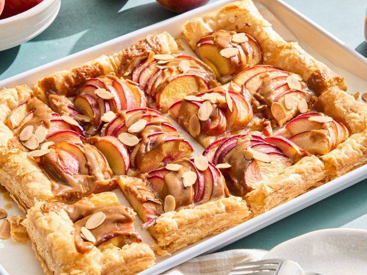

Peach Tart

Flaky all-butter puff pastry, sweet juicy peaches, and a drizzle of rich dulce de leche come together for a rustic treat that's perfect for summer gatherings or weeknight indulgence.
Ingredients
- 1 (14-ounce) package all-butter puff pastry, thawed
- 1 1/4 pounds fresh peaches, peeled, pitted, and thinly sliced, or 3 3/4 cups frozen sliced peaches (1 pound), thawed
- 2 tablespoons butter
- 1/3 cup canned dulce de leche, warmed
- 2 tablespoons sliced almonds or chopped pecans, toasted
Steps:
- Preheat the oven to 400 degrees F (200 degrees C). Line a 10x15-inch rimmed baking sheet with parchment paper.
- Roll puff pastry on a lightly floured surface to a 9 1/2x14 1/2-inch rectangle. Transfer to the prepared baking sheet. Generously prick puff pastry with the tines of a fork, leaving 1/2-inch border at the edges.
- Bake puff pastry in the preheated oven until puffed and set in the center, 12 to 15 minutes.
- Remove from the oven and arrange peach slices over the pastry. Cut up the butter and dot over the peaches.
- Return to the oven and bake until edges are browned, 25 to 30 minutes. Drizzle dulce de leche over the peaches. Bake 5 minutes more.
- Remove from the oven and sprinkle with almonds. Transfer to a wire rack and cool completely before serving.
Back To Recipes